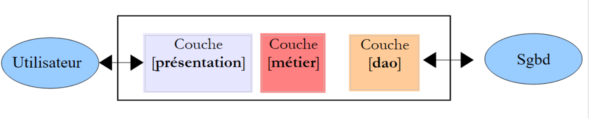

7. الهندسة الطبقية والبرمجة عبر الواجهات
7.1. Introduction
نقترح كتابة تطبيق يسمح بعرض درجات طلاب إحدى المدارس الإعدادية. سيكون لهذا التطبيق بنية متعددة الطبقات:
 |
- الطبقة [présentation] هي الطبقة التي تتفاعل مع مستخدم التطبيق.
- الطبقة [metier] تنفذ قواعد إدارة التطبيق، مثل حساب الراتب أو الفاتورة. تستخدم هذه الطبقة البيانات الواردة من المستخدم عبر الطبقة [présentation] ومن الطبقة SGBD عبر الطبقة [dao].
- تدير الطبقة [dao] (كائنات الوصول إلى البيانات) الوصول إلى بيانات الطبقة SGBD.
سنقوم بتوضيح هذه البنية باستخدام تطبيق بسيط يعمل على وحدة التحكم:
- لن تكون هناك قاعدة بيانات،
- ستدير الطبقة [dao] الكيانات Eleve وClasse وMatiere وNote، مما يتيح إدارة درجات الطلاب،
- وستسمح الطبقة [métier] بحساب المؤشرات على درجات طالب معين،
- وستكون الطبقة [présentation] عبارة عن تطبيق وحدة تحكم يعرض النتائج التي تحسبها الطبقة [métier].
مشروع Visual Studio الخاص بالتطبيق هو كما يلي:
 |
7.2. كيانات التطبيق
الكيانات هي كائنات. سيكون لدينا هنا أربع فئات لكل من الكيانات Eleve، Classe، Matiere، Note.
 |
يضم الملف [entites.py] أربع فصول.
تمثل الفئة [Classe] فئة في المرحلة الإعدادية:
class Classe:
# المنشئ
def __init__(self,id,nom):
# يتم تخزين المعلمات
self.id=id
self.nom=nom
# toString
def __str__(self):
return "Classe[{0},{1}]".format(self.id,self.nom)
- الأسطر 3-6: يتم تعريف الفصل برقم id (السطر 5) ورقم nom (السطر 6)؛
- السطران 9-10: طريقة عرض الفصل.
الفئة [Matiere] هي كما يلي:
class Matiere:
# الشركة المصنعة
def __init__(self,id,nom,coefficient):
# يتم حفظ المعلمات
self.id=id
self.nom=nom
self.coefficient=coefficient
# toString
def __str__(self):
return "Matiere[{0},{1},{2}]".format(self.id,self.nom,self.coefficient)
- السطران 3-7: تُعرَّف المادة برقمها (السطر 5)، واسمها (السطر 6)، ومعاملها (السطر 7)؛
- السطران 10-11: طريقة عرض المادة.
الفئة [Eleve] هي كما يلي:
class Eleve:
# المُصنِّع
def __init__(self,id,nom,prenom,classe):
# يتم حفظ المعلمات
self.id=id
self.nom=nom
self.prenom=prenom
self.classe=classe
# toString
def __str__(self):
return "Eleve[{0},{1},{2},{3}]".format(self.id,self.prenom,self.nom,self.classe)
- الأسطر 3-8: يتم تحديد الطالب برقمه (السطر 5)، واسمه (السطر 6)، واسمه الأول (السطر 7)، وفصله (السطر 8). هذا المعامل الأخير هو مرجع إلى كائن [Classe]؛
- السطران 11-12: طريقة عرض الطالب.
الفئة [Note] هي كما يلي:
class Note:
# المُصنِّع
def __init__(self,id,valeur,eleve,matiere):
# يتم حفظ المعلمات
self.id=id
self.valeur=valeur
self.eleve=eleve
self.matiere=matiere
# toString
def __str__(self):
return "Note[{0},{1},{2},{3}]".format(self.id,self.valeur,self.eleve,self.matiere)
- السطور 3-8: يتم تمييز الكائن [Note] برقمه (السطر 5)، وقيمة الدرجة (السطر 6)، وإشارة إلى الطالب الحاصل على هذه الدرجة (السطر 7)، وإشارة إلى المادة التي تتعلق بها الدرجة (السطر 8)؛
- السطور 11-12: طريقة عرض الكائن [Note].
7.3. الطبقة [dao]
 |
ستوفر الطبقة [dao] الواجهة التالية للطبقة [métier]:
- getClasses تعرض قائمة الفصول الدراسية في المدرسة الإعدادية؛
- getMatieres يعرض قائمة المواد الدراسية؛
- getEleves يعرض قائمة الطلاب؛
- getNotes تعرض قائمة الدرجات.
لن تستخدم الطبقة [métier] سوى هذه الأساليب. ولا داعي لأن تعرف كيفية تنفيذها. وبالتالي، يمكن أن تأتي هذه البيانات من مصادر مختلفة (مخزنة بشكل ثابت، أو من قاعدة بيانات، أو من ملفات نصية، ...) دون أن يؤثر ذلك على الطبقة [métier]. وهذا ما يُعرف بالبرمجة عبر الواجهات.
تقوم الفئة [Dao] بتنفيذ هذه الواجهة بالطريقة التالية:
# -*- coding=utf-8 -*-
# استيراد وحدة الكيانات
from entites import *
class Dao:
# منشئ
def __init__(self):
# إنشاء مثيلات للفئات
classe1=Classe(1,"classe1")
classe2=Classe(2,"classe2")
self.classes=[classe1,classe2]
# المواد الدراسية
matiere1=Matiere(1,"matiere1",1)
matiere2=Matiere(2,"matiere2",2)
self.matieres=[matiere1,matiere2]
# الطلاب
eleve11=Eleve(11,"nom1","prenom1",classe1)
eleve21=Eleve(21,"nom2","prenom2",classe1)
eleve32=Eleve(32,"nom3","prenom3",classe2)
eleve42=Eleve(42,"nom4","prenom4",classe2)
self.eleves=[eleve11,eleve21,eleve32,eleve42]
# الدرجات
note1=Note(1,10,eleve11,matiere1)
note2=Note(2,12,eleve21,matiere1)
note3=Note(3,14,eleve32,matiere1)
note4=Note(4,16,eleve42,matiere1)
note5=Note(5,6,eleve11,matiere2)
note6=Note(6,8,eleve21,matiere2)
note7=Note(7,10,eleve32,matiere2)
note8=Note(8,12,eleve42,matiere2)
self.notes=[note1,note2,note3,note4,note5,note6,note7,note8]
#-----------
# واجهة
#-----------
# قائمة الفصول
def getClasses(self):
return self.classes
# قائمة المواد
def getMatieres(self):
return self.matieres
# قائمة الطلاب
def getEleves(self):
return self.eleves
# قائمة الدرجات
def getNotes(self):
return self.notes
- السطر 4: يتم استيراد الوحدة النمطية التي تحتوي على الكيانات التي تتعامل معها الطبقة [dao]؛
- السطر 8: لا تحتوي الدالة المنشئة على معلمات. وهي تنشئ أربع قوائم ثابتة:
- الأسطر 10-12: قائمة الفئات؛
- الأسطر 14-16: قائمة المواد الدراسية؛
- الأسطر 18-22: قائمة الطلاب؛
- الأسطر 24-32: قائمة الدرجات.
- الأسطر 39-52: تقتصر الطرق الأربع لواجهة الطبقة [dao] على إرجاع مرجع إلى القوائم الأربع التي أنشأها المنشئ.
قد يكون برنامج الاختبار كما يلي:
# -*- coding=utf-8 -*-
# استيراد وحدة الكيانات والطبقة [dao]
from entites import *
from dao import *
# إنشاء مثيل لطبقة [dao]
dao=Dao()
# قائمة بالفئات
for classe in dao.getClasses():
print classe
# قائمة الفئات
for matiere in dao.getMatieres():
print matiere
# قائمة الفئات
for eleve in dao.getEleves():
print eleve
# قائمة الفئات
for note in dao.getNotes():
print note
التعليقات واضحة بذاتها. تستخدم الأسطر 11-24 واجهة الطبقة [dao]. ولا توجد هنا أي افتراضات بشأن التنفيذ الفعلي للطبقة. في السطر 8، يتم إنشاء مثيل للطبقة [dao]. هنا نضع افتراضات: اسم الفئة ونوع المنشئ. توجد حلول تسمح بتجنب هذه التبعية.
نتائج تنفيذ هذا البرنامج النصي هي كما يلي:
7.4. الطبقة [métier]
 |
الطبقة [métier] تُنفذ الواجهة التالية:
- getClasses تعرض قائمة الفصول الدراسية في المدرسة الإعدادية؛
- getMatieres تعرض قائمة المواد الدراسية؛
- getEleves تعرض قائمة الطلاب؛
- getNotes تعرض قائمة الدرجات؛
- getStatsForEleve يعرض درجات الطالب رقم idEleve بالإضافة إلى معلومات عنها: المعدل المرجح، وأدنى درجة، وأعلى درجة.
لن تستخدم الطبقة [présentation] سوى هذه الطرق. ولا داعي لأن تعرف كيفية تنفيذها.
تُرجع الطريقة getStatsForEleve كائنًا من النوع [StatsForEleve] على النحو التالي:
class StatsForEleve:
# الشركة المصنعة
def __init__(self, eleve, notes):
# يتم حفظ الإعدادات
self.eleve=eleve
self.notes=notes
# يتم إيقاف التشغيل في حالة عدم وجود ملاحظات
if len(notes)==0:
return
# معالجة الدرجات
sommePonderee=0
sommeCoeff=0
self.max=-1
self.min=21
for note in notes:
valeur=note.valeur
coeff=note.matiere.coefficient
sommeCoeff+=coeff
sommePonderee+=valeur*coeff
if valeur<self.min:
self.min=valeur
if valeur>self.max:
self.max=valeur
# حساب متوسط درجات الطالب
self.moyennePonderee=float(sommePonderee)/sommeCoeff
# toString
def __str__(self):
# حالة الطالب الذي ليس لديه درجات
if len(self.notes)==0:
return "Eleve={0}, notes=[]".format(self.eleve)
# حالة الطالب الذي لديه درجات
str=""
for note in self.notes:
str+="{0} ".format(note.valeur)
return "Eleve={0}, notes=[{1}], max={2}, min={3}, moyenne={4}".format(self.eleve, str, self.max, self.min, self.moyennePonderee)
- السطر 3: يتلقى المنشئ معلمتين:
- مرجع إلى الطالب من النوع [Eleve] الذي يتم حساب المؤشرات الخاصة به؛
- مرجع إلى درجاته، وهي قائمة من الكائنات من النوع [Note].
- السطران 8-9: إذا كانت قائمة الدرجات فارغة، فلا يتم المضي قدمًا.
- وإلا، في الأسطر 11-25، يتم حساب المؤشرات التالية:
- self.moyennePonderee: متوسط درجات الطالب المرجح بمعاملات المواد؛
- self.min: أدنى درجة حصل عليها الطالب؛
- self.max: أعلى درجة حصل عليها.
- السطر 28: طريقة عرض الفصل بالصيغة الموضحة في السطر 36.
قد يكون نص البرنامج النصي لاختبار هذه الفئة كما يلي:
# -*- coding=utf-8 -*-
# استيراد وحدات الكيانات، والطبقة [dao] والطبقة [metier]
from entites import *
from dao import *
from metier import *
# فصل دراسي
classe1=Classe(1,"6e A")
# طالب في هذه الفصل
paul_durand=Eleve(1,"durand","paul",classe1)
# ثلاث مواد دراسية
maths=Matiere(1,"maths",1)
francais=Matiere(2,"francais",2)
anglais=Matiere(3,"anglais",3)
# الدرجات التي حصل عليها الطالب في هذه المواد
note_maths=Note(1,10,paul_durand,maths)
note_francais=Note(2,12,paul_durand,francais)
note_anglais=Note(3,14,paul_durand,anglais)
# يتم عرض المؤشرات
print StatsForEleve(paul_durand,[note_maths, note_francais,note_anglais])
نتائج العرض على الشاشة هي كما يلي:
لنعد إلى بنية الطبقات لدينا:
 |
تقوم الفئة [Metier] بتنفيذ الطبقة [métier] بالطريقة التالية:
class Metier:
# المُنشئ
def __init__(self,dao):
# يتم تخزين المرجع في الطبقة [dao]
self.dao=dao
#-----------
# الواجهة
#-----------
# المؤشرات على الملاحظات
def getStatsForEleve(self,idEleve):
# إحصائيات الطالب رقم idEleve
# البحث عن الطالب
trouve=False
i=0
eleves=self.getEleves()
while not trouve and i<len(eleves):
trouve=eleves[i].id==idEleve
i+=1
# هل تم العثور عليه؟
if not trouve:
raise RuntimeError("L'eleve [{0}] n'existe pas".format(idEleve))
else:
eleve=eleves[i-1]
# قائمة بجميع الدرجات
notes=[]
for note in self.getNotes():
# إضافة جميع درجات الطالب إلى «الدرجات»
if note.eleve.id==idEleve:
notes.append(note)
# عرض النتيجة
return StatsForEleve(eleve,notes)
# قائمة الفصول
def getClasses(self):
return self.dao.getClasses()
# قائمة المواد
def getMatieres(self):
return self.dao.getMatieres()
# قائمة الطلاب
def getEleves(self):
return self.dao.getEleves()
# قائمة الدرجات
def getNotes(self):
return self.dao.getNotes()
- الأسطر 3-5: يتلقى المنشئ مرجعًا إلى الطبقة [dao]. يجب أن تحتوي الطبقة [métier] على هذه الإشارة. وهنا، يتم تزويدها بها عبر منشئها. ويمكن تصور حلول أخرى. في بنية الطبقات الممثلة أفقيًا، يجب أن تحتوي كل طبقة على إشارة إلى الطبقة الموجودة على يمينها؛
- الأسطر 36-49: الطرق getClasses و getMatieres، getEleves، getNotes تكتفي بتفويض الاستدعاء إلى الطرق التي تحمل نفس الأسماء في الطبقة [dao]؛
- السطر 12: تتلقى الدالة getStatsForEleve كمعلمة رقم الطالب الذي يجب عرض مؤشراته.
- السطر 17: سيتم البحث عن الطالب في قائمة جميع الطلاب؛
- الأسطر 18-20: حلقة البحث؛
- السطر 23: إذا لم يتم العثور على الطالب، يتم إثارة استثناء؛
- وإلا، في السطر 25، يتم تخزين الطالب الذي تم العثور عليه؛
- الأسطر 28-31: يتم البحث بين جميع درجات المدرسة الإعدادية عن تلك التي تخص الطالب المخزّن؛
- وعند العثور عليها، يمكن إنشاء الكائن StatsForEleve المطلوب.
7.5. الطبقة [console]
 |
يتم تنفيذ الطبقة [console] بواسطة البرنامج النصي التالي:
# -*- coding=utf-8 -*-
# استيراد وحدة الكيانات، ووحدة [dao]، ووحدة [metier]
from entites import *
from dao import *
from metier import *
# ----------- الطبقة [console]
# إنشاء مثيل الطبقة [metier]
metier=Metier(Dao())
# طلب / استجابة
fini=False
while not fini:
# السؤال
print "numero de l'eleve (>=1 et * pour arreter) : "
# إجابة
reponse=raw_input()
# انتهى؟
if reponse.strip()=="*":
break
# هل الإدخال صحيح؟
ok=False
try:
idEleve=int(reponse,10)
ok=idEleve>=1
except:
pass
# هل البيانات صحيحة؟
if not ok:
print "Saisie incorrecte. Recommencez..."
continue
# الحساب
try:
print metier.getStatsForEleve(idEleve)
except RuntimeError,erreur:
print "L'erreur suivante s'est produite : {0}".format(erreur)
- السطر 10: إنشاء مثيل لكل من الطبقتين [dao] و [métier]. هذه هي التبعية الوحيدة لرمزنا فيما يتعلق بتنفيذ هاتين الطبقتين؛
- السطر 34: يتم استخدام واجهة الطبقة [métier]؛
- السطر 19: تقوم الطريقة strip بإزالة المسافات في بداية ونهاية السلسلة؛
- السطر 20: تتيح break الخروج من حلقة؛
- السطر 24: يتم محاولة تحويل السلسلة المدخلة إلى عدد صحيح عشري؛
- السطر 29: تكون قيمة ok صحيحة فقط إذا تم المرور بالسطر 25؛
- السطر 31: continue يسمح بالعودة إلى منتصف الحلقة؛
- السطر 34: حساب المؤشرات؛
- السطر 35: يتم اعتراض الاستثناء RuntimeError الذي قد ينشأ من الطبقة [métier].
فيما يلي مثال على التنفيذ: